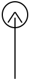
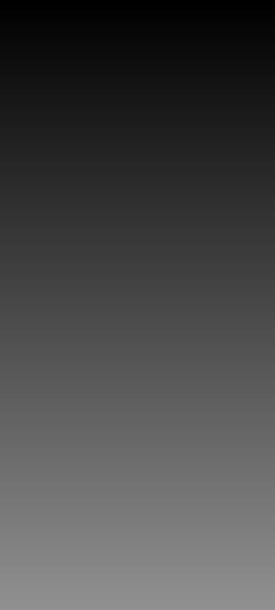
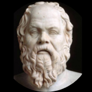
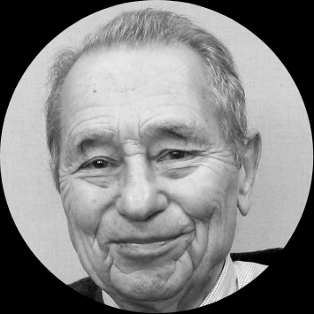
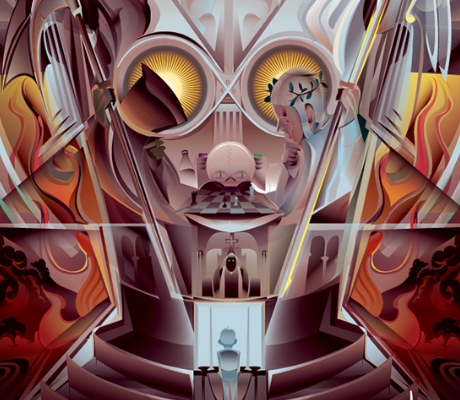
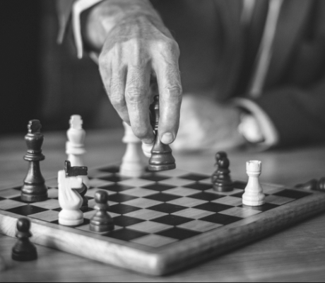

Dobro i zło
w naszym życiu
Postaramy się odpowiedzieć co jest dobro, a co zło i dlaczego to pytanie dotyczy wszystkich i jaką rolę odgrywa w naszym życiu, otwierając takie pytania :
Co dla mnie
"dobro" i "zło"
W filozofii "dobro" i "zło" to kategorie moralne i etyczne, które wyrażają moralną ocenę zachowań ludzi (grup, klas), a także zjawiska społeczne z określonych pozycji klasowych. "Dobre" odnosi się do tego, co społeczeństwo uważa za moralne, godne naśladowania. "Zło" ma odwrotne znaczenie: niemoralne, godne potępienia.
Ale czy różni ludzie mają tę samą koncepcję tego samego pytania : "czy dobro i zlo dla kazdego znaczy to samo". Najprawdopodobniej nie! I za pomocą ankiety przeprowadzonej wśród ludzi (młodych i dorosłych pokoleń) oraz za pomocą fragmentu filmu będziemy w stanie odpowiedzieć na to pytanie.
"Co jest dobre, a co złe?"
"Co jest dobre, a co złe?" - jest często pytany przez ciekawskie dzieci od najmłodszych lat.
Na to pytanie mogą odpowiedzieć rodzice, zastanawiając się nad swoim paradygmatem światopoglądu, lub dziecko może samo wyciągnąć wnioski na podstawie pewnych doświadczeń, które pochodzą z bajek lub kreskówek dla dzieci, gdzie istnieje ciągła konfrontacja między "dobrem" a "złem".
Wszyscy jesteśmy inni i każdy z nas ma własne rozumienie dobra i zła, bez względu na to, czy małe dziecko czy stary człowiek ma doświadczenie życiowe, opinie i rozumowanie zawsze będą inne, tak, mogą się one zbiegać, ale nie będą identyczne w 100 procentach!Ludzie mają różne przekonania.
Ale to nie zmieni rzeczywistości.
W którym jest dobro i zło.

Od czasów starożytnych trwa wieczna walka między dobrem a złem.

"Najwyższą mądrością jest rozróżnienie dobra od zła."
Sokrat
"Najwyższą mądrością jest rozróżnienie dobra od zła."
"Poznaj siebie!"
William Shakespeare
Złe i dobre - nie ma czegoś takiego.
Jest coś, co zdecydujemy się nazwać.

– Indiańskie powiedzenie
"W każdym z nas walczą dwa wilki.
Jeden jest zły. Drugi jest dobry. Który wilk wygra?
Ten, którego karmisz."
Od czasów starożytnych trwa wieczna walka między dobrem a złem.
Ta walka trwa w każdym człowieku. A kto z nich wygra, taka właściwie osoba i będzie. Ale czy jest dobry czy zły? Jak można to określić. Przede wszystkim przez ludzkie działania. A nie wiedząc, czym jest zło, nie znalibyśmy dobra.
Zasadne wydaje się więc tutaj pytanie, czy świat bez zła i bez świętych (ich niewzruszonej moralności) byłby gorszy od tego, w którym przyszło nam żyć? Zło powodowane przez naturę (leski żywiołowe, katastrofy, choroby itd.) może czynić świat lepszym, stwarzając sytuację, w której człowiek ma szansę wykorzystać wolną wolę do przeciwstawienia się trudnościom, pomagania innym czy też moralnego zachowania. Zakładamy tutaj, iż Bóg obdarzył istoty ludzkie wolną wolą, czyli zdolnością decydowania o tym, co robimy. Jak widać, zagadnienie zła wiąże się z pytaniem o naszą wolnością i dlatego może zbliżać się nas do dobra lub oddalać od niego. I chociaż mamy swobodę wyboru sposobu działania, nie możemy wybrać konsekwencji naszych działań. Konsekwencje, dobre lub złe, są naturalną konsekwencją każdej naszej decyzji. Zasady moralne pomagają człowiekowi czynić dobro, są zawarte w zwyczajach i tradycjach ludowych, powiedzeniach, itd. Takie zasady są sformułowane w najważniejszych księgach religijnych - Biblii, Koranie, Torze i innych: kochaj bliźniego jak siebie; cześć ojcu i matce; nie zabijaj; nie kradnij; nie zeznawaj fałszywie; nie bądź zazdrosny.
Niebezpiecznym uproszczeniem byłoby myślenie, że niektórzy ludzie są naturalnie "dobrzy", a inni naturalnie "źli"Okrutny człowiek raczej nie będzie w stanie stać się miłym i wrażliwym. Czy to naprawdę beznadziejne? Niektórzy psychologowie uważają, że można nauczyć się być miłym. Ale nie przez machanie magiczną różdżką. Potrzebujesz samoświadomości i zrozumienia, do czego się nadaje. Jednak, aby uchodzić za dobrych ludzi, musieliśmy znać zasady moralne. Ważne jest, aby odpowiednio postępować. W końcu każda sytuacja życiowa ma zazwyczaj kilka opcji zarówno dobra, jak i zła.

Jerome Kagan
Jerome Kagan, profesor na Uniwersytecie Harvarda i badacz psychologii dobroci, również uważał, że ludzkość została genetycznie zaprogramowana do czynienia dobra. Innymi słowy, wszyscy przychodzimy na ten świat z zainstalowanym „oprogramowaniem”, które ma czynić dobro.
Ale dlaczego ludzie, którzy są zaprogramowani do czynienia dobra, zachowują się inaczej? Procesor z Uniwersytetu w Berkeley David Keltner, dyrektor Centrum Studiów nad Dobrocią, mówi, że dziś dobroć stała się mniej, bo społeczeństwo bardziej skupia się na indywidualizmie niż na świadomości grupowej.
Kiedy ludzie zaczynają myśleć w kategoriach swoich własnych interesów, równowaga biologiczna skłania się raczej w kierunku zazdrości, złości, przemocy i rywalizacji niż dobra. Można powiedzieć, że samolubstwo rodzi zło moralne. Jeśli przyjmiemy tego diabła do swoich serc, cierpimy z tego powodu nie tylko środowisko, ale także my. Ponieważ postępujemy wbrew naszej naturze. W rzeczywistości potrzebujemy życzliwości. Daje poczucie harmonii, egzaltacji, potrzeby, wartości, sukcesu.
Za dobrego uważamy osobę, która w różnych sytuacjach życiowych, świadomie wybierając między dobrem a złem.
Ona jest w stanie porzucić własne interesy, pragnienia, komfortem dla innych. Dobre ludzie, musieliśmy znać zasady moralne. Ważne jest, aby odpowiednio postępować.
Kiedy patrzymy na nocne niebo, odczuwamy podziw i spokój. Ten sam stan daje nam życzliwość. Ponieważ niebo składa się z gwiazd, tak dobroć to wiele dobrych uczynków. Kto to robi? To wolontariusze, strażacy, lekarze i po prostu zwykli ludzie.
Dobry człowiek powinien być dobry dla każdego, nie tylko dla swojej rodziny i krewnych, i nie gardzić innymi. Życie dobrego człowieka jest trudne, ale interesujące, ponieważ bierze w codziennym życiu najlepszą rolę, jest zadowolona z siebie i raduje się z tego, co może przynieść pożytek innym. Dobry człowiek zawsze analizuje swoje działania. Aby stać się jeszcze lepszym.

